```{r}
library(tidyverse)
library(tidyquant)
library(fpp3)
# Get Apple stock price
AAPL <- tq_get("AAPL")
```I want to set up an example that runs completely from beginning to end working with stock market data establishing one approach to daily data. The book shows what happens if we want to model trading days as a sequence that doesn’t actually reflect time per se. I want to take a different approach. First, I will need some data. Let me work with Apple’s stock market data in OHLC format. I can get these from tidyquant.
Now I need to create the full sequence of dates that includes days that markets are closed. I want to left join the original data to this to get Apple’s data on a complete set of calendar dates as Full.Set.
```{r}
# Create unpopulated calendar
calendar.set <- data.frame(date=seq.Date(from=min(AAPL$date), to=max(AAPL$date), by="1 day"))
# Join together the calendar and AAPL OHLC data
Full.Set <- left_join(calendar.set, AAPL)
# Create 5 day moving average to model using slider::slide_dbl
library(slider)
Full.Set <- Full.Set %>% mutate(MA5 = slide_dbl(close, mean, na.rm=TRUE, .before=4)) %>% as_tsibble(index=date)
```From here, I can create a training set and a test set.
```{r}
# Split a training set before November 30, 2022
Train <- Full.Set %>% filter(date < "2022-11-30") %>% as_tsibble(index=date)
Test <- anti_join(Full.Set, Train) %>% as_tsibble(index=date)
# Plot the whole thing
Full.Set %>% autoplot(MA5)
```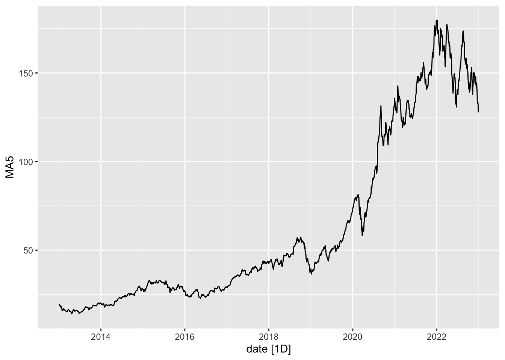
Now estimate two models.
```{r}
Mods <- Train %>% model(AM5=ARIMA(MA5), ETS5=ETS(MA5))
Mods %>% glimpse()
Mods %>% glance()
```Rows: 1
Columns: 2
$ AM5 <model> [ARIMA(1,1,4)(0,0,1)[7] w/ drift]
$ ETS5 <model> [ETS(M,Ad,N)]
# A tibble: 2 × 11
.model sigma2 log_lik AIC AICc BIC ar_roots ma_roots MSE AMSE
<chr> <dbl> <dbl> <dbl> <dbl> <dbl> <list> <list> <dbl> <dbl>
1 AM5 0.284 -2854. 5724. 5724. 5773. <cpl [1]> <cpl> NA NA
2 ETS5 0.0000447 -10610. 21231. 21231. 21268. <NULL> <NULL> 0.331 1.17
# … with 1 more variable: MAE <dbl>As we can see, the ARIMA is of a single difference with 1 AR and 4 MA terms as well as a 7 day seasonal moving average term. The ETS contains no seasons, multiplicative errors, and additive trends.
```{r}
# Forecast for 30 days
FC <- Mods %>% forecast(h=30)
```How well does it do?
```{r}
# Model Assessment
accuracy(FC, Test)
```# A tibble: 2 × 10
.model .type ME RMSE MAE MPE MAPE MASE RMSSE ACF1
<chr> <chr> <dbl> <dbl> <dbl> <dbl> <dbl> <dbl> <dbl> <dbl>
1 AM5 Test -3.82 7.30 5.43 -2.94 4.04 NaN NaN 0.914
2 ETS5 Test 0.385 5.39 4.93 0.108 3.57 NaN NaN 0.908The ETS model seems to do better on this test set.
```{r}
# Show the forecast needs alpha to see them
Plot1 <- FC %>% autoplot(., alpha=0.2) + hrbrthemes::theme_ipsum_es() + labs(y="Forecast AAPL")
Plot1
```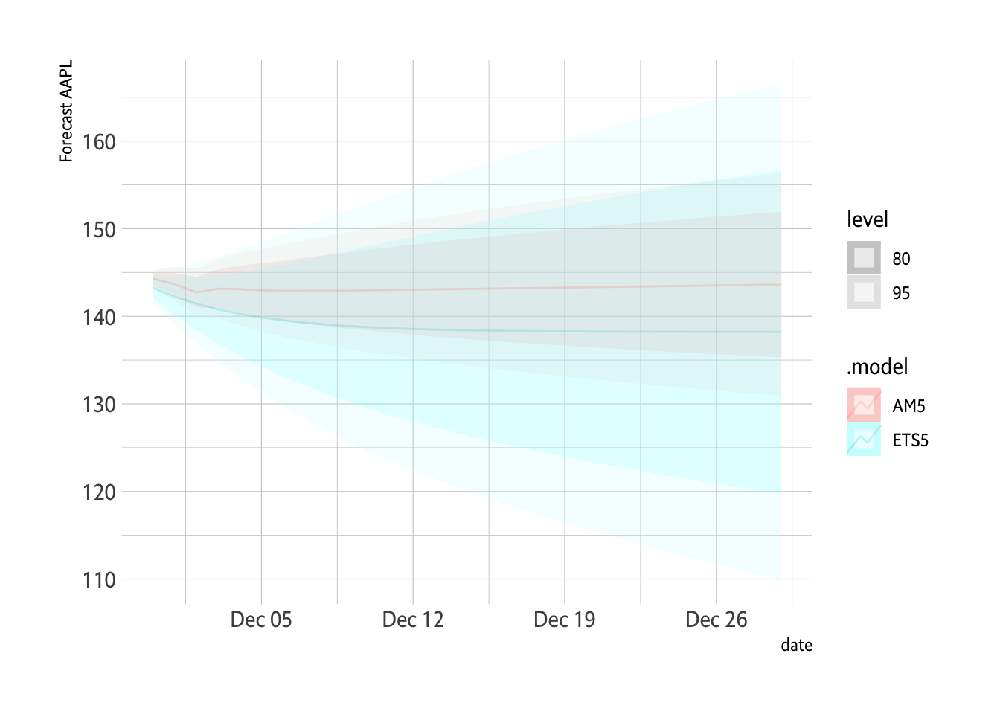
The ETS bends lower and this better fits the data over the last 30 days.
```{r}
# Show the forecast needs alpha to see them
Plot1 <- FC %>% autoplot(., alpha=0.4) + hrbrthemes::theme_ipsum_es() + labs(y="Forecast AAPL") + geom_point(data=Test, aes(x=date, y=MA5), color="blue", size=2, alpha=0.5) + guides(level="none")
Plot1
```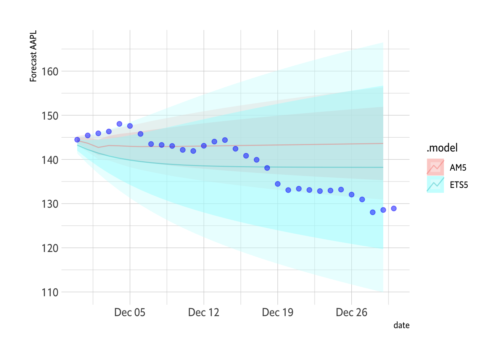
I don’t really gain much from showing the whole training set. It really is a lot of data.
```{r}
# Adapt the forecast to some data.
Plot2 <- FC %>% autoplot(.) + geom_line(data=Train, aes(x=date, y=MA5)) + hrbrthemes::theme_ipsum_es() + labs(y="AAPL")
Plot2
```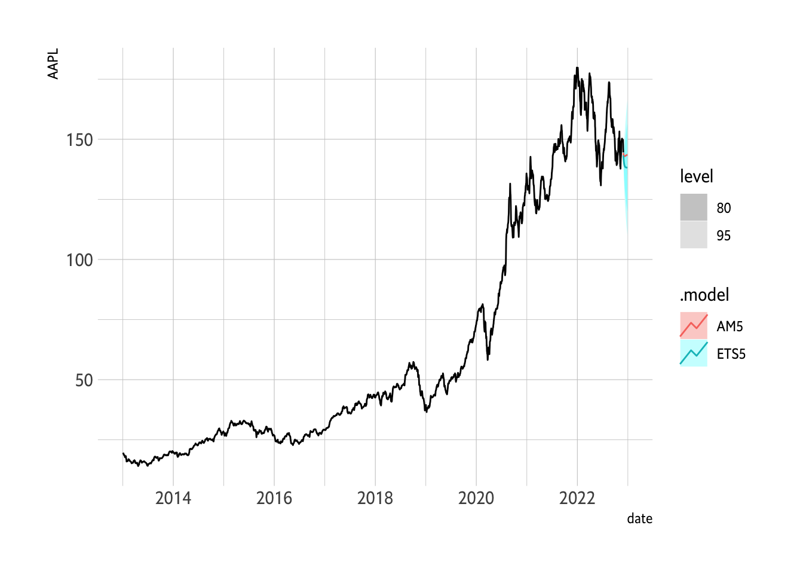
A bit more plotting.
```{r}
library(patchwork)
# Plot1 + Plot2
# Zoomed in.
D2021P <- Full.Set %>% filter(date > "2022-10-01")
Plot2 <- FC %>% autoplot(., alpha=0.2) + geom_line(data=D2021P, aes(x=date, y=MA5)) + hrbrthemes::theme_ipsum_es() + labs(y="AAPL") + guides(level="none")
Plot1 + Plot2
```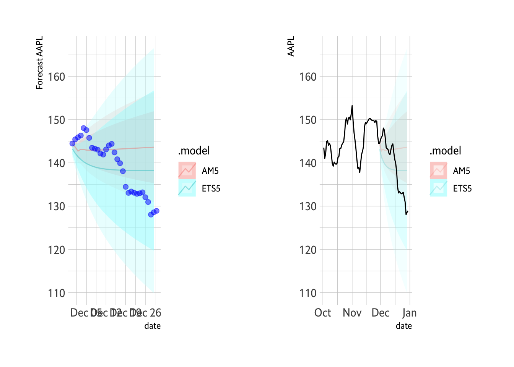
Show it in zoom.
```{r}
Plot2
```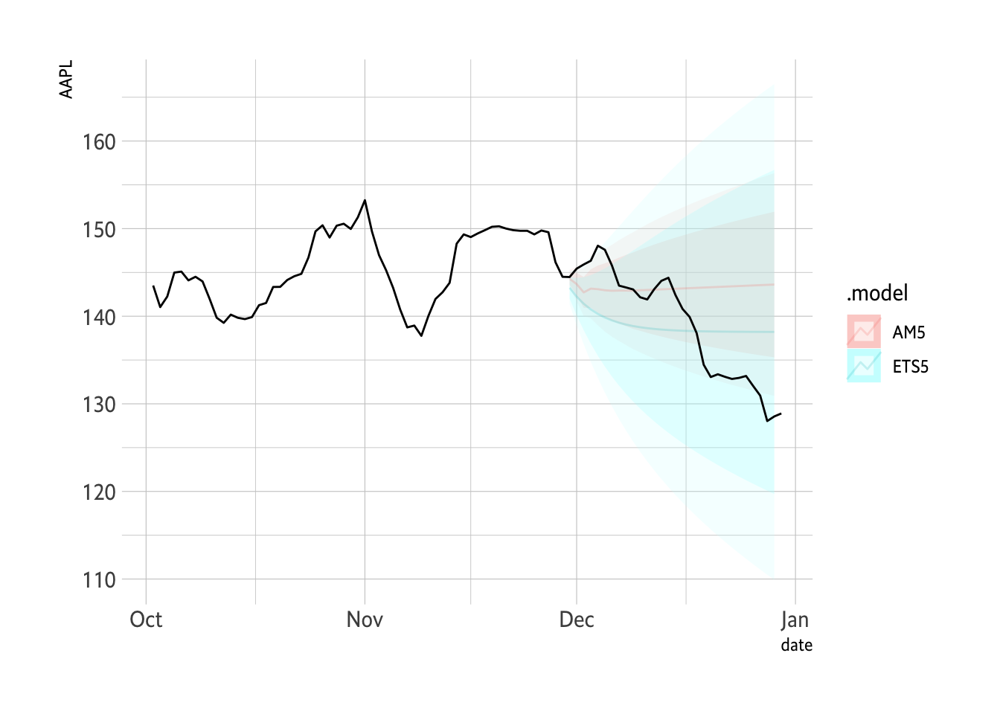
A Cross-Validation
```{r}
apple_tr <- Full.Set %>%
stretch_tsibble(.init = 3350, .step = 30) %>%
relocate(date, .id)
apple_tr %>% model(AM5=ARIMA(MA5)) %>%
forecast(h=30) %>%
accuracy(Full.Set)
apple_tr %>% model(ETS5=ETS(MA5)) %>%
forecast(h=30) %>%
accuracy(Full.Set)
```# A tibble: 1 × 10
.model .type ME RMSE MAE MPE MAPE MASE RMSSE ACF1
<chr> <chr> <dbl> <dbl> <dbl> <dbl> <dbl> <dbl> <dbl> <dbl>
1 AM5 Test -3.68 10.8 8.52 -2.62 5.63 5.02 3.80 0.956
# A tibble: 1 × 10
.model .type ME RMSE MAE MPE MAPE MASE RMSSE ACF1
<chr> <chr> <dbl> <dbl> <dbl> <dbl> <dbl> <dbl> <dbl> <dbl>
1 ETS5 Test -2.97 9.98 7.70 -2.16 5.15 4.54 3.50 0.959The ETS model seems to fit better across the cross-validated sets also. Some forecasts on the data.
```{r}
AFR <- apple_tr %>% model(AM5=ARIMA(MA5), ETS5=ETS(MA5)) %>% forecast(h=30)
```Putting all the data together requires a bit of manipulating.
```{r, width="900px", height="600px"}
FS1 <- Full.Set %>% select(date, MA5) %>% mutate(Truth = MA5) %>% select(-MA5) %>% as_tsibble(index=date)
AFR2 <- AFR %>% left_join(., FS1) %>% filter(.id<11)
AFR2 %>% autoplot(alpha=0.7) +
facet_wrap(vars(.id), scales = "free_x") + hrbrthemes::theme_ipsum_rc() + guides(level="none")
```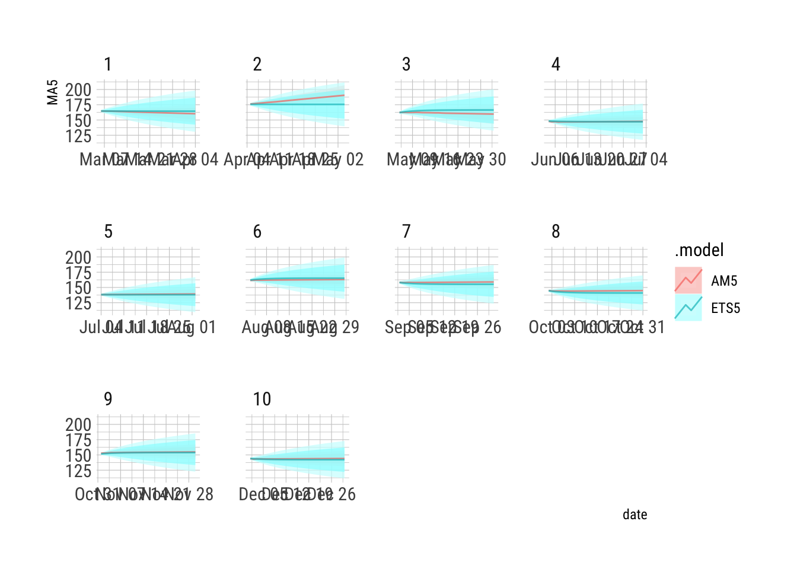
This is a solid view of the forecasts.
```{r}
AFR2 %>% autoplot(alpha=0.5) + facet_wrap(vars(.id), scales = "free_x") + hrbrthemes::theme_ipsum_rc() + guides(level="none") + geom_line(data=AFR2, aes(x=date, y=Truth), size=1, alpha=0.2)
``````{r}
AFR2 %>% filter(.id==1) %>% autoplot(alpha=0.5) + hrbrthemes::theme_ipsum_rc() + guides(level="none") + geom_line(data={AFR2 %>% filter(.id==1)}, aes(x=date, y=Truth), size=1, alpha=0.2)
```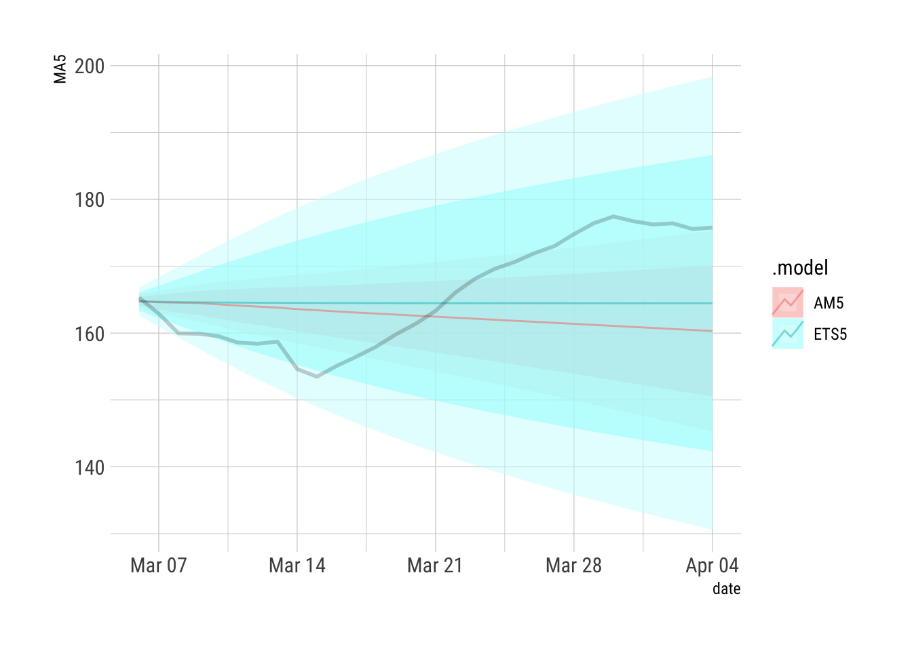
```{r}
AFR2 %>% filter(.id==2) %>% autoplot(alpha=0.5) + hrbrthemes::theme_ipsum_rc() + guides(level="none") + geom_line(data={AFR2 %>% filter(.id==2)}, aes(x=date, y=Truth), size=1, alpha=0.2)
```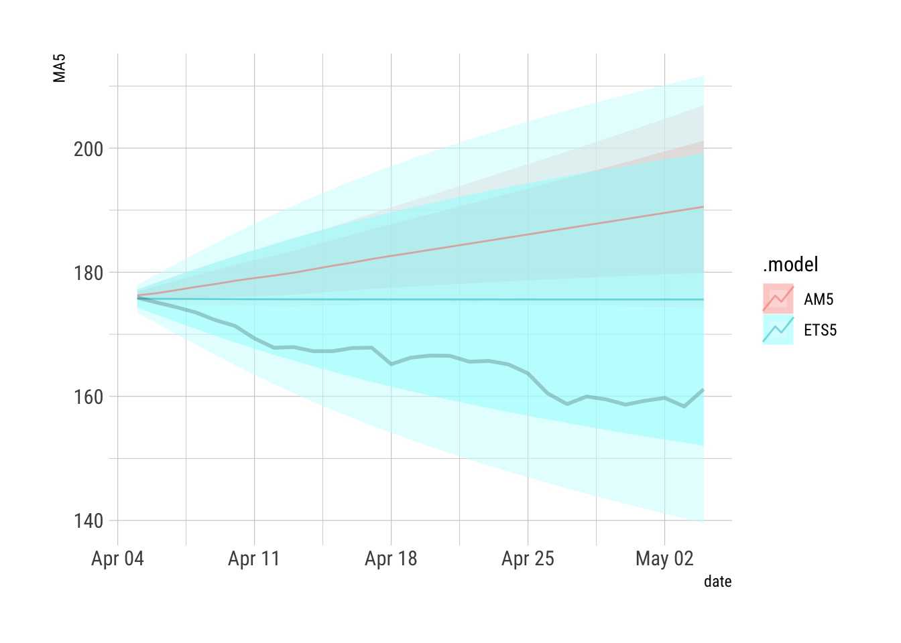
```{r}
AFR2 %>% filter(.id==3) %>% autoplot(alpha=0.5) + hrbrthemes::theme_ipsum_rc() + guides(level="none") + geom_line(data={AFR2 %>% filter(.id==3)}, aes(x=date, y=Truth), size=1, alpha=0.2)
```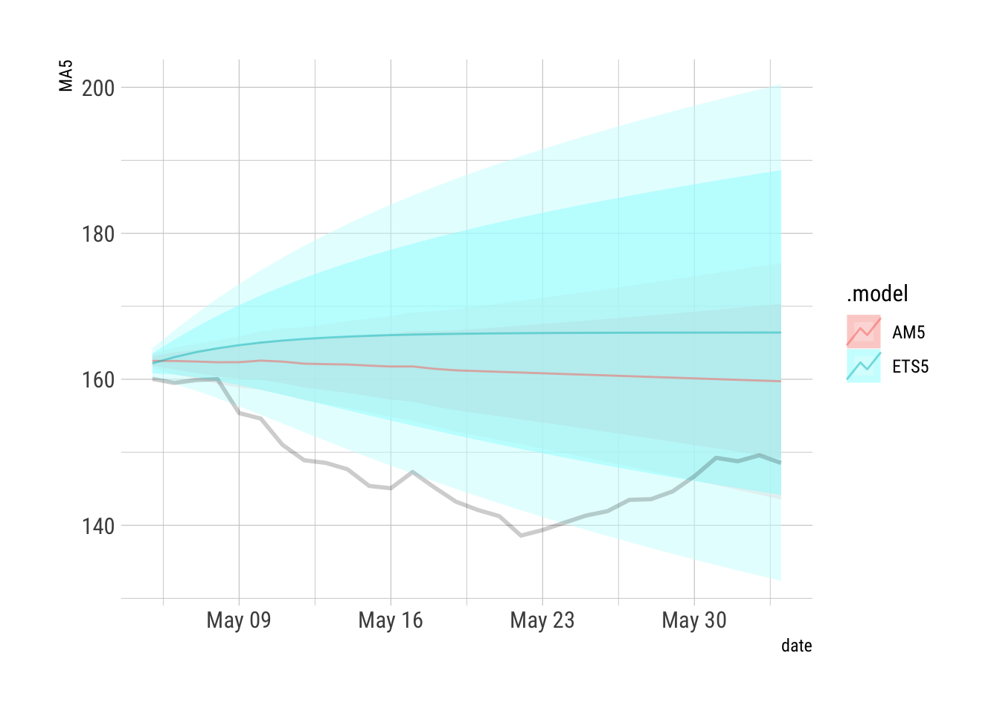
```{r}
AFR2 %>% filter(.id==4) %>% autoplot(alpha=0.5) + hrbrthemes::theme_ipsum_rc() + guides(level="none") + geom_line(data={AFR2 %>% filter(.id==4)}, aes(x=date, y=Truth), size=1, alpha=0.2)
```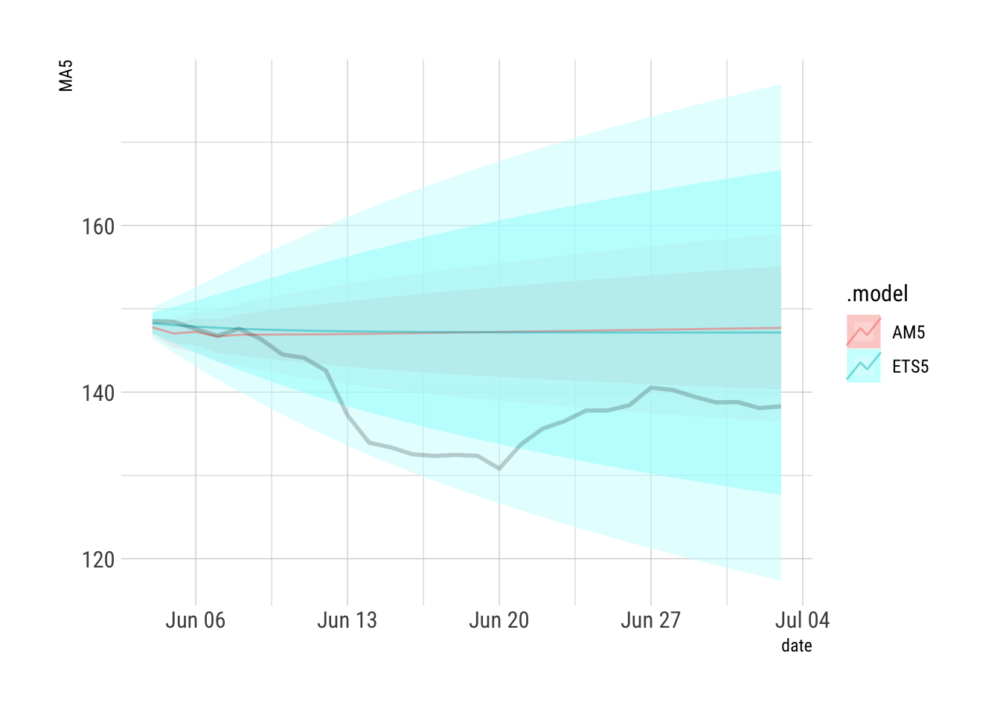
```{r}
AFR2 %>% filter(.id==5) %>% autoplot(alpha=0.5) + hrbrthemes::theme_ipsum_rc() + guides(level="none") + geom_line(data={AFR2 %>% filter(.id==5)}, aes(x=date, y=Truth), size=1, alpha=0.2)
```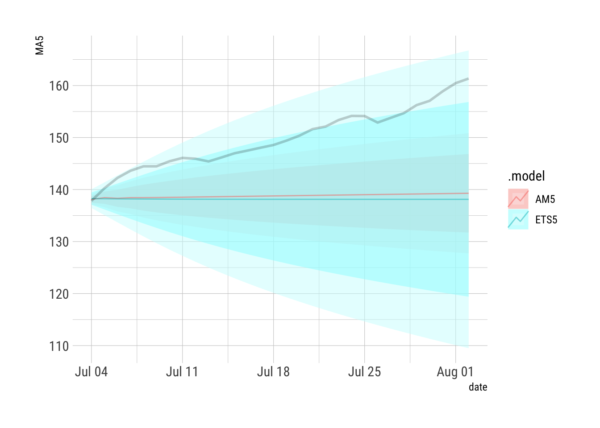
```{r}
AFR2 %>% filter(.id==6) %>% autoplot(alpha=0.5) + hrbrthemes::theme_ipsum_rc() + guides(level="none") + geom_line(data={AFR2 %>% filter(.id==6)}, aes(x=date, y=Truth), size=1, alpha=0.2)
```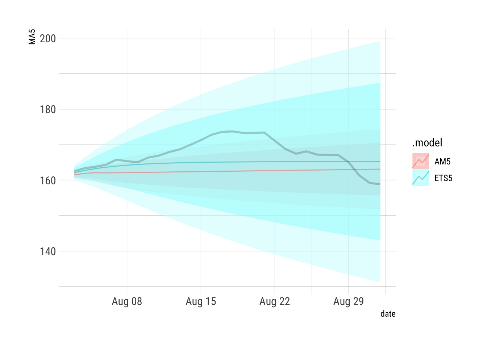